Follow these steps to set up your account and start tracking your hydration. The whole process takes under two minutes.
First-time users are taken directly to the Sign Up screen. Enter your email and a password to get started.
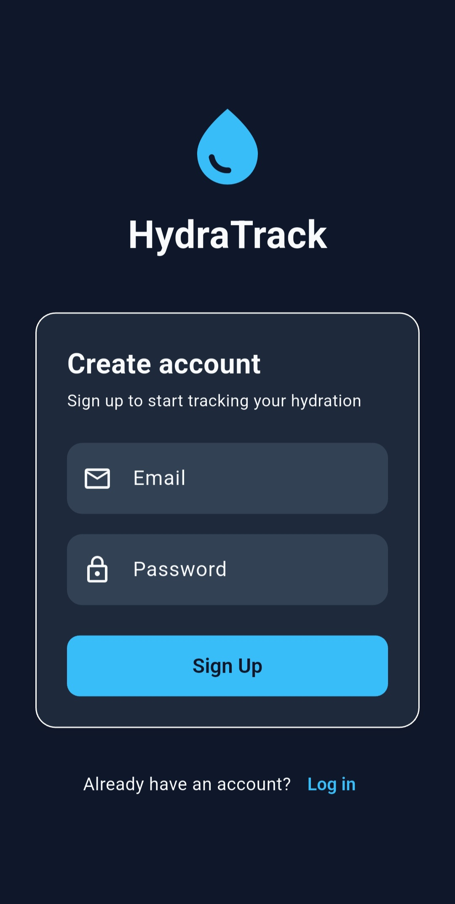
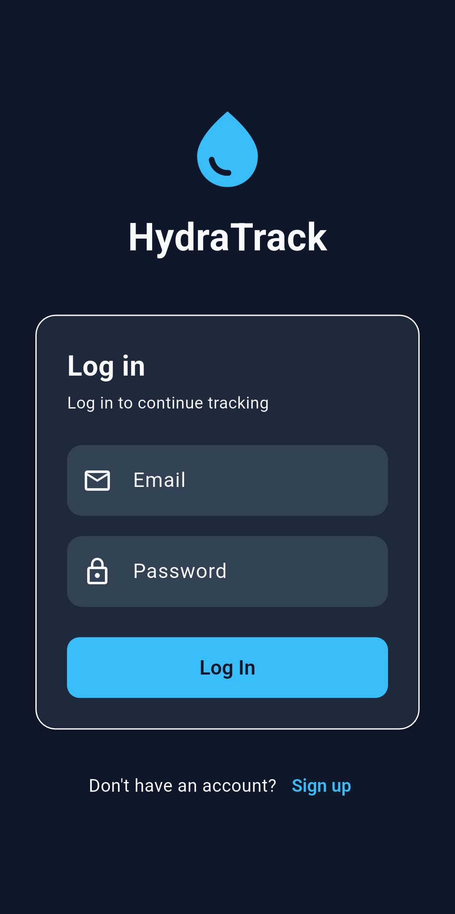
Enter your age, height, and weight. HydraTrack automatically calculates your daily hydration goal and caffeine limit.
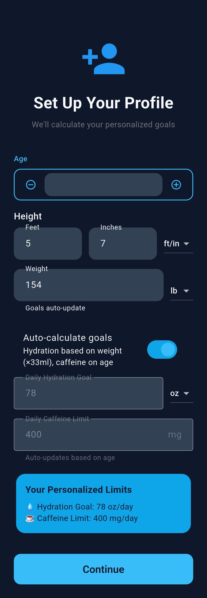
From the home screen, tap any drink in the Quick Add grid to instantly log it. Tap More to browse the full drink library.
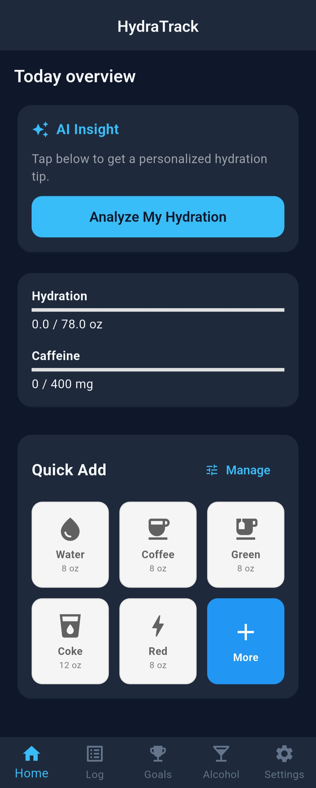
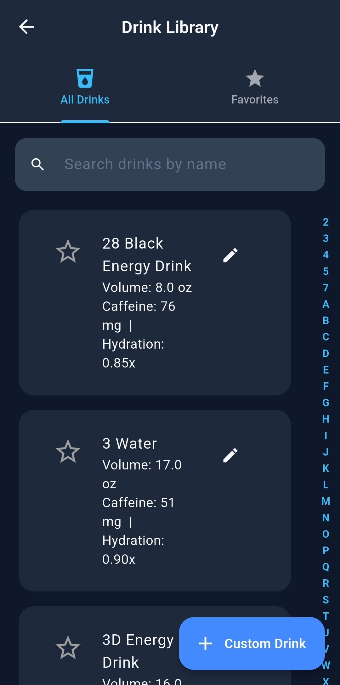
Build a personal drink list from the library. Star a drink to instantly save it as a favorite — no extra steps needed.
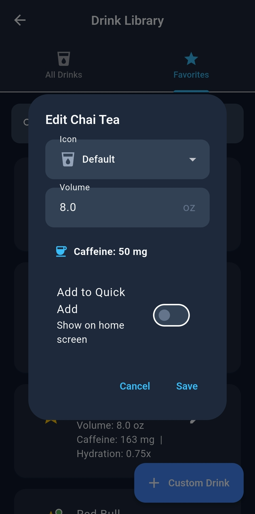
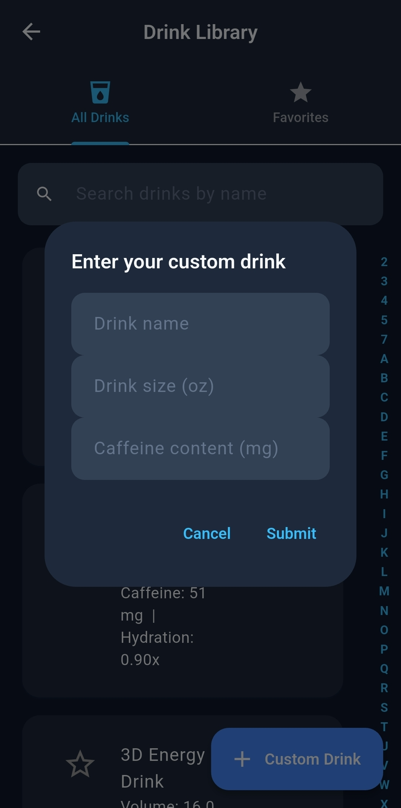
Tap Log in the bottom navigation to see everything you've logged today, with the hydration factor applied to each drink.
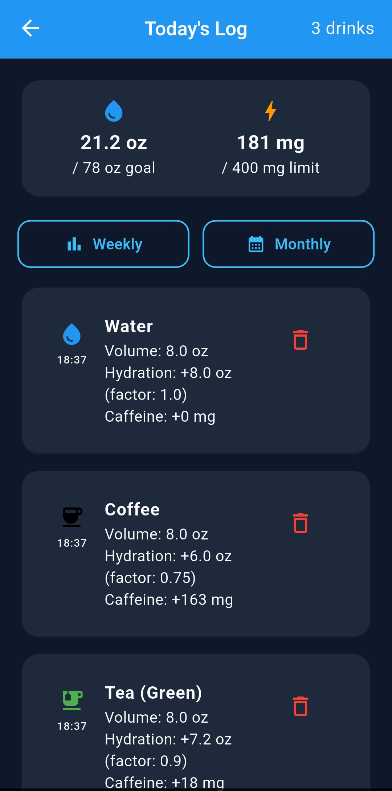
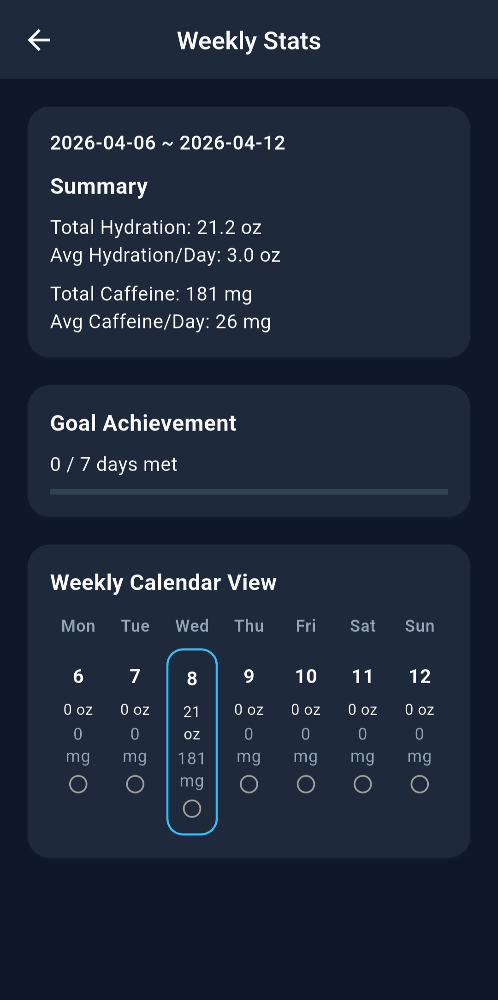
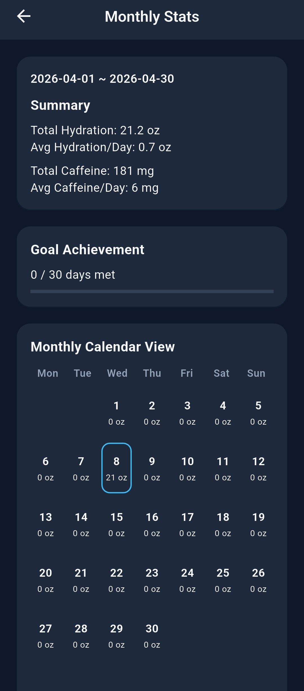
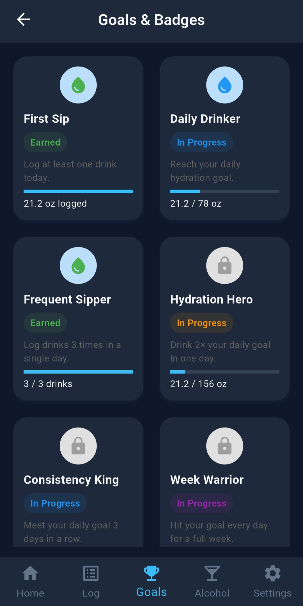
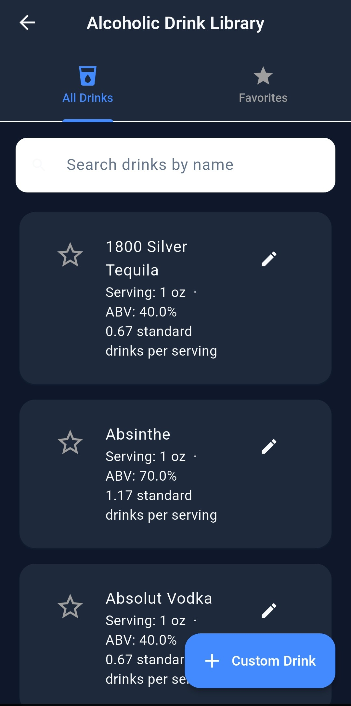
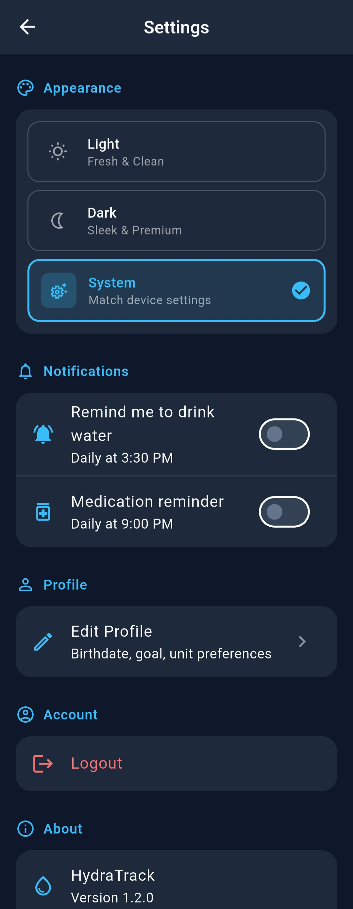